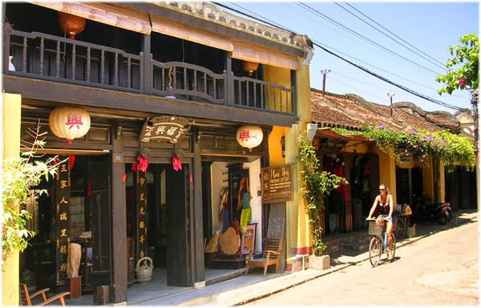

Với chiều sâu văn hóa đa tầng, đa sắc Hội An được coi là bảo tàng sống về kiến trúc và lối sống đô thị của Việt Nam. Những giá trị văn hóa của phố cổ Hội An là nét đẹp cần phải được lưu giữu và bảo tồn.
Năm 1999 Hội An được Unesco công nhận là di sản văn hóa thế giới. Được coi là điển hình đặc biệt tiêu biểu về cảng thị truyền thống ở Đông Nam Á với những công trình kiến trúc truyền thống có từ thế kỉ 17 đến thế kỉ 19.
Trải qua bao nhiêu năm tháng và nhiều cuộc tàn phá của chiến tranh, nhưng những công trình kiến trúc ở đây vẫn còn nguyên vẹn và giữ nguyên giá trị thẩm mĩ cho đến ngày nay.
Nằm bên bồ hạ lưu sông Thu Bồn, cách thành phố Đà Nẵng 30km. Phố cổ Hội An từng là một thương cảng quốc tế sầm uất, là trung tâm buôn bán nối liền ba miền Bắc, Trung, Nam.
Vì vậy những công trình kiến trúc và giá trị văn hóa của phổ cổ Hội An được hội tụ từ nhiều nền văn hóa khác nhau. Chính điều này đã tạo nên cho chúng ta một miền đất hội tụ và giao thoa văn hóa đa dạng.
Với sự pha trộn, giao thoa của nhiều nét đẹp khác nhau. Những công trình kiến trúc, tôn giáo, tín ngưỡng và giá trị văn hóa của phố cổ Hội An là vật chứng sống động nhất cho quá trình hình thành, phát triển và cả sự suy tàn của đô thị xưa.
Các hội quán, đền miếu là công trình tiêu biểu cho dấu tích của người hoa. Nằm bên cạnh đó là những mái nhà ghi lại nét truyền thống của người Việt và những ngồi nhà mang đậm phong cách cổ kính của Pháp.
Bước chân vào khu phố cổ xinh đẹp này, ta có thể cảm nhận sâu sắc sự pha trộn đa dạng, đầy nghệ thuật và cổ kính bởi những dãy nhà san sát mang những nét đặc trưng kiến trúc của các nền văn hóa khác nhau.
Không chỉ là bảo tàng sống của các công trình kiến trúc. Giá trị văn hóa của phố cổ Hội An còn nằm ở nền văn hóa phi vật thể phong phú và đa dạng. Trải qua nhiều sự biến động của thời cuộc, nhưng cuộc sống thường nhất của người dân đất Hội vẫn giữ nguyên nét đẹp ban đầu và tránh xa mọi sự xô bồ.
Với những phong tục tập quán, thói quen sinh hoạt, tín ngưỡng, nghệ thuật dân gian, lễ hội văn hóa vẫn đang được lưu giữ, bảo tồn và phát triển. Trong cuộc sông hiện đại này thật khó để bắt gặp một phố cổ về đêm, hát bài chòi trên sông Đoài, ẩm thực đường phố, đêm đèn lồng lung linh huyền ảo.
Cùng với đó là những mẹt hàng lưu niệm tò hè hay gánh chè của những mẹ già xứ Hội, cảnh tượng đầy ắp trong tuổi thơ của mỗi người nhưng giờ đây thật hiếm có, khó tìm. Ở đây, cuộc sống trôi qua thệt đẹp và đầy ắp âm thanh gọi về một niềm hoài niệm đã xa.

Trong sự phát triển của cuộc sống hiện đại, thì những làng nghề truyền thống vẫn đang được người dân nơi đây giữ gìn và phát triển.
Làng mộc Kim Bồng, rau Trà Quế, gốm sứ Thanh Hà. Những công việc đã gắn liền với biết bao nhiêu thế hệ, nuôi sống biết bao nhiêu con người và là niềm tự hào của mỗi người dân nơi đây.
Ngày nay, đây còn là nơi lưu giữ lại những giá trị văn hóa của phố cổ Hội An và thu hút khách du lịch đến tham quan để hiểu hơn về những ngành nghề truyền thống của dân tộc.
Là nơi lưu giữ và pha trộn nhiều nền văn hóa, hàng năm Hội An thu hút được hàng triệu lượt khách du lịch trong và ngoài nước.
Bằng việc bảo tồn các công trình kiến trúc, phong tục tập quán và tái tạo các lễ hội, chắc chắn du lịch Hội An sẽ ngày càng phát triển và những giá trị văn hóa của phố cổ Hội An sẽ còn được lưu giữ mãi theo thời gian.